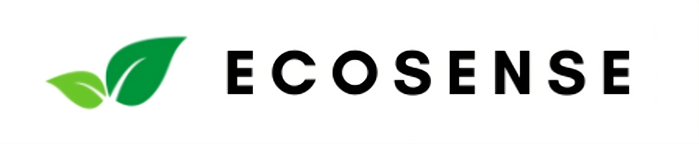

EcoSense
Congressional App Challenge Winner
I co-built EcoSense, a Congressional App Challenge-winning sustainability app with environmental news, an AI waste classifier, and a community forum. The cross-platform app uses TypeScript, React Native, Expo, Firebase, Node.js, Express, Google Gemini, and Event Registry.